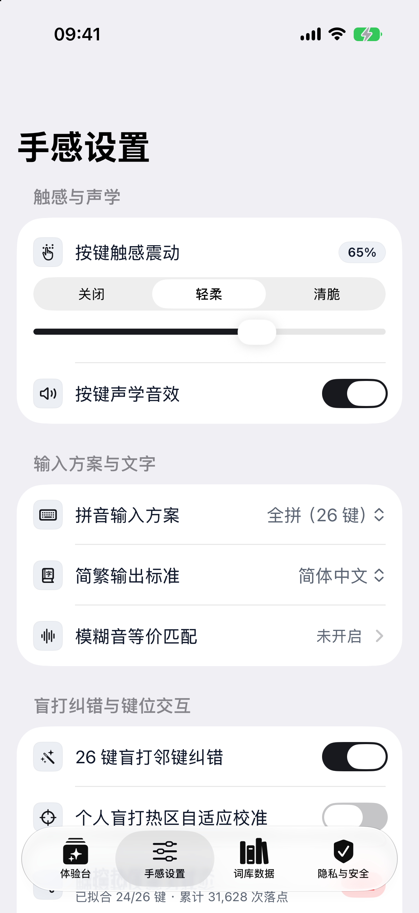
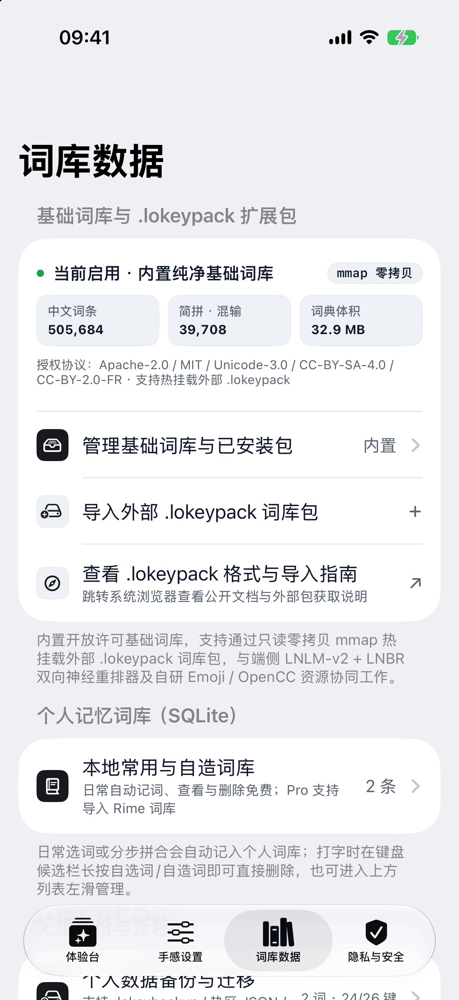

1:1 iOS 26 Liquid Glass 与四档屏幕几何
键盘根视图透明透出系统原生液态玻璃胶囊底座，精确校准 Max/Plus（268.5pt）、Pro/标准（250.0pt）、Mini/SE（239.0pt）与横屏（197.5pt）四档高度；7.0pt 连续曲率纯白键帽，空闲与输入态保持 0.0pt 光学中心零跳变。
从系统自带键盘切过来，手指不需要任何适应时间。1:1 延续 iOS 26 Liquid Glass 键位几何与肌肉记忆，搭载自研「落墨 · Inkstone」离线引擎——二进制层面彻底剔除网络能力，却依然聪明跟手。
第三方输入法最劝退的往往是略微偏移的键帽比例、生硬的动画和陌生的交互逻辑。Lokey 选择先 1:1 复刻系统原生的肌肉记忆，再把聪明劲藏在手指落下之后。
键盘根视图透明透出系统原生液态玻璃胶囊底座，精确校准 Max/Plus（268.5pt）、Pro/标准（250.0pt）、Mini/SE（239.0pt）与横屏（197.5pt）四档高度；7.0pt 连续曲率纯白键帽，空闲与输入态保持 0.0pt 光学中心零跳变。
空输入框原生高频起始候选（我 / 你 / 在 / 这...）；左滑删除键（⌫）一键清空整段待上屏长句；横拖 Shift 或长按空格微调未上屏拼音光标；数字与时间（12:00、3.14、v1.0、localhost:8080）自动输出半角标点，无需来回切符号页。
基于 Apple CoreHaptics 提供 0%–100% 无级震动强度滑块与「关闭 / 轻柔 / 清脆」三档质感，配合三档系统原生按键音效，在主应用设置后通过 App Group 毫秒级同步至键盘。
触控路径严格隔离跨进程 XPC 阻塞，120Hz 键帽气泡先于宿主文本提交响应；原生自适应 Emoji 键盘支持离线标签快筛与 4×8 横滑，快打不掉帧。
点击下方场景，直观查看 Lokey 如何在完全离线状态下处理邻键误触、句首同音、中英混输与个人拇指落点偏差。
没有开屏广告，没有花哨皮肤商城。手感调校、盲打热区可视化、词库热挂载与个人记忆管理都在本地一页触达。

0%–100% 无级震动滑块、全拼/小鹤/自然码切换、简繁标准与 26 键个人热区校准状态。

完整遵循 iOS 26 深浅色外观与液态玻璃底栏，夜间微调参数不刺眼。

实时查看只读 mmap 词库规模，支持秒级导入外部 .lokeypack、个人 Rime 词表与一键切回内置词库。
任何输入法都可以写一句“注重隐私”。Lokey 将 18 个核心引擎与键盘扩展 Swift 文件原样公开至 Lokey-Audit（SHA-256 字节级一致），欢迎直接跑 Mach-O 符号审查。
全拼/双拼整句解码、内置基础词库、简繁转换与 Emoji 联想在关闭「允许完全访问」时照样 100% 离线工作。
仅用于 App Group 沙盒（group.com.kianuni.lokey）内的偏好同步、个人 SQLite 自造词记忆与 CoreHaptics 线性震动，依然零网络传输。
遇到系统安全文本输入（isSecureTextEntry），自动停止个人词库学习并跳过一切本地日志写入；完整声明详见 PRIVACY.md。
# 1. 源码、Info.plist 与 Entitlements 零联网审计
git clone https://github.com/Kianuni/Lokey-Audit.git
cd Lokey-Audit
./scripts/audit_zero_network.sh --source-only
# ✓ 0 Network/CFNetwork/WebKit imports · 0 socket calls
# 2. 编译并对 Mach-O 产物执行 otool -L / nm -u 符号检验
python3 scripts/build_demo_lexicon.py
python3 scripts/generate_xcodeproj.py
xcodebuild test -project LokeyAudit.xcodeproj -scheme LokeyAudit \
-derivedDataPath build/DerivedData \
-destination 'platform=iOS Simulator,name=iPhone 17 Pro'
./scripts/audit_zero_network.sh build/DerivedData
# ✓ 0 URLSession / NWConnection / CFNetwork / socket symbols内置 50.6 万条纯净基础词库，满足日常流畅输入；如果你习惯更大词量或行业词表，可通过「文件」App 或 AirDrop 离线热挂载 .lokeypack 扩展包。